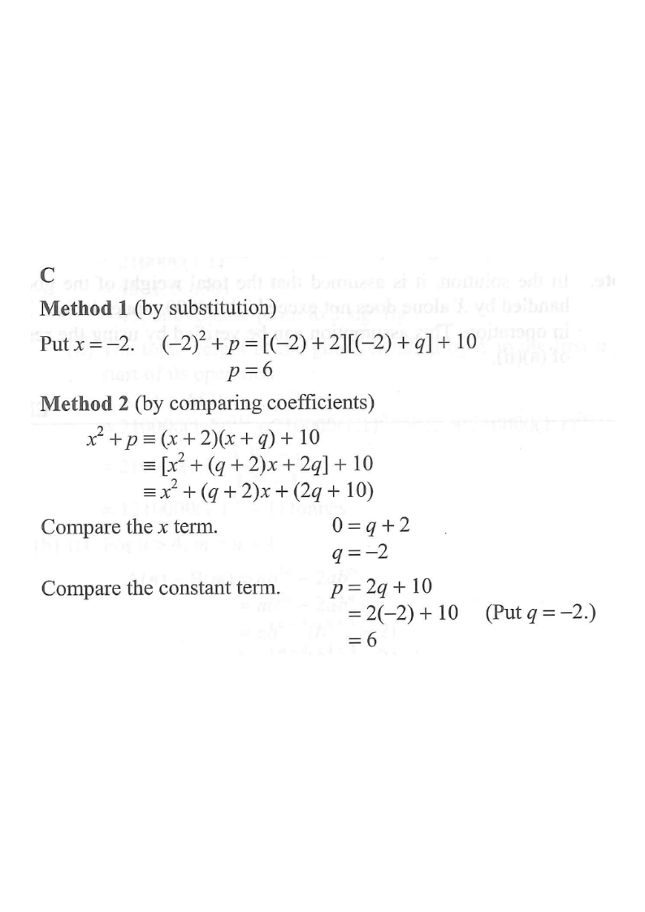

Given identityFocus of this stepResultCoefficients
[2012MC#3] · 4. Polynomials
Question. If $p$ and $q$ are constants such that
\\[ x^{2}+p \\equiv (x+2)(x+q)+10, \\]
then $p=$
A.$-4$
B.$-2$
C.$6$
D.$10$

Figure (original exam diagram)
Step 1Read the given identity
\\[ x^{2}+p \\equiv (x+2)(x+q)+10 \\]
The LHS has no $x$ term, so the $x$-coefficient on the RHS must be $0$.
Equating coefficients works; substituting a clever value of $x$ works even faster.
💡 An identity (≡) is true for every value of $x$ — so we may choose any convenient $x$.
Step 2Method 1 — substitute the root $x=-2$
Choosing $x=-2$ makes the factor $(x+2)$ vanish:
\\[ (-2)^{2}+p = [(-2)+2]\\,[(-2)+q]+10 \\]
\\[ 4+p = (0)(q-2)+10 = 10 \\]
\\[ p = 10-4 = 6 \\]
💡 The whole product term contains the factor $(x+2)$, so $x=-2$ kills it — only the constant $10$ survives.